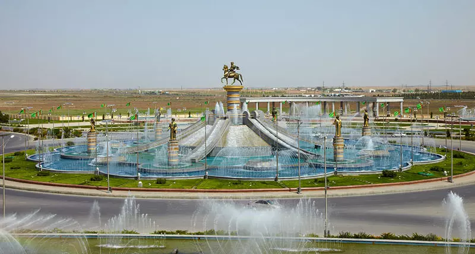
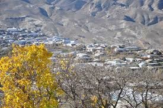
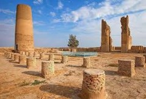

1.Tag: Aschgabat
Ankunft in der turkmenischen Hauptstadt Aschgabat. Sie werden von unserem Reiseleiter abgeholt und zum Hotel
gebracht (Frühcheck-in). Freizeit.
Morgens Fahrt zur Festung Nissa – dem Heiligtum der parthischen Könige. Die UNESCO erklärte die Festung 2007
zum Weltkulturerbe. Nissa war eine der ersten Hauptstädte der Parther. Sie wurde von Arsakes I. (regierte
ca. 250 v. Chr. – 211 v. Chr.) gegründet und ist angeblich die königliche Nekropole der parthischen Könige.
Es ist jedoch weder erwiesen, dass die Festung in Nissa eine königliche Residenz noch ein Mausoleum war. Die
Ruinen der antiken Siedlung Nissa liegen 18 km von Aschgabat entfernt im Dorf Bagyr. Fahrt zur Besichtigung
der Turkmenbashy-Ruhy-Moschee in Kipchak (der größten Moschee in Zentralasien).
Anschließend machen Sie eine Stadtrundfahrt durch Aschgabat. Sie werden den Hochzeitspalast, das moderne
„Yildyz“-Hotel, das Riesenrad, das Verfassungsdenkmal, den Bogen der Neutralität, das Denkmal und den Park
der Unabhängigkeit, die Ertogrul-Gazy-Moschee, das Olympiastadion von Aschgabat und den
Halk-Hakydasy-Gedenkkomplex sehen. Übernachtung im Hotel.

2. Tag: Ashgabat – Dorf Nokhur
Frühstück im Hotel. Fahrt zur Festung Gokdepe (50 km, 50 min), die im Dezember 1880 von der Armee des
Russischen Reichs angegriffen wurde. Die Belagerung von Gokdepe dauerte 23 Tage, danach wurde die Stadt im
Sturm erobert. Besuchen Sie die Geokdepe-Moschee (Saparmyrat Hajy), die 1995 zur Erinnerung an die
Niederlage erbaut wurde und für ihr mint-türkisblaues Dach und ihre Struktur aus weißem Marmor bekannt ist.
Dann fahren Sie zur Pferdefarm, um den Nationalstolz der Turkmenen zu sehen – Achalatke-Pferde, die
schönsten Pferde der Welt. Vor 5000 Jahren begannen die Turkmenen, Achalatke-Pferde zu züchten. Diese
weltweit einzigartige Rasse wurde nie mit anderen Rassen vermischt. So berühmte Kaiser wie Alexander der
Große und Darius I. wollten Achalatke-Pferde besitzen. Auf der Farm gibt es über 35 wunderschöne Pferde. Dem
Aberglauben zufolge wird jeder Kranke, der ein Ahalteke-Pferd berührt, bald wieder gesund.
Später fahren wir zum Bergdorf Nokhur (72 km, 1 Stunde). Das Dorf selbst liegt in einem kleinen Tal in den
Bergen des Kopet-Dag-Gebirges. Abgesehen von
der Hauptstraße mitten durch die Stadt sind die Straßen so eng, dass gerade mal ein Auto zwischen den hohen
Steinmauern auf beiden Seiten hindurchpasst. Die Nohkuri, die dieses abgelegene Bergdorf bevölkern,
unterscheiden sich stark von anderen turkmenischen Stämmen. Legenden zufolge war dies der Ort, an dem die
Arche Noah festgemacht wurde, alle Tiere herausgelassen und verschiedene Samen gepflanzt wurden. Tatsächlich
unterscheidet sich die Natur von Nokhur von den umliegenden Orten. Besuchen Sie den großen Baum und einen
der einzigartigen Friedhöfe, der isoliert ist. Fast jedes Grab ist durch einen Holzpfosten gekennzeichnet,
der mit den Hörnern einer Bergziege verziert ist. Erfüllen Sie sich Ihre heiligen Wünsche, indem Sie einen
Wunschbaum besuchen, der nach Kyz Bibi benannt ist. Übernachtung in Nokhur.

3. Tag: Dorf Nokhur – Sumbar-Tal – Dehistan
Frühstück im Gästehaus. Morgens Fahrt nach Dehistan (409 km, 8 Std.) durch das Sumbar-Tal. Dehistan rühmt
sich seiner malerischen Türme antiker Siedlungen und Monumente aus dem 10.-12. Jahrhundert sowie der
ältesten Moschee aus der frühislamischen Zeit, die auf der antiken Grabstätte von Mashad steht. Diese Stadt
ist wahrscheinlich die abgelegenste und isolierteste. Einst war sie eine blühende mittelalterliche Stadt an
den Karawanenstraßen zwischen Choresm und dem persischen Hyrkanien. Übernachtung im Camp in der Nähe von
Dehistan.

4. Tag: Dehistan – Balkanabat – Yangykala
Nach dem Frühstück fahren wir zu den Yangykala-Schluchten (356 km, 6 Std.), einem der landschaftlich
reizvollsten Naturdenkmäler Turkmenistans. Der Ausdruck „Yangy kala“ bedeutet aus dem Turkmenischen
übersetzt „Feuerfestung“. Tatsächlich ähneln die steilen Klippen in Weiß, Gelb, Ocker, Lila und Rot, die von
Wind und Regen kunstvoll geformt wurden, sehr den Steinburgen aus einer Fantasiewelt. Erkunden Sie die
Schluchten. Übernachtung in der Schlucht

5. Tag: Yangykala – Turkmenbashi
Picknick-Frühstück im Canyon. Fahrt nach Turkmenbashi (181 km, 3 Std.). Auf dem Weg nach Turkmenbashi
besuchen Sie Gozli Ata. Begeben Sie sich auf eine faszinierende Stadtrundfahrt durch Turkmenbashi, die
pulsierende Hafenstadt am Kaspischen Meer, die früher als Krasnovodsk bekannt war. Tauchen Sie ein in die
reiche Geschichte, die lebendige Kultur und die atemberaubende Naturschönheit der Stadt.
Wagen Sie sich in die Altstadt, wo charmante Architektur aus der Sowjetzeit nahtlos mit traditionellen
turkmenischen Menschen verschmilzt. Erkunden Sie die lebhaften Basare, auf denen Sie eine Fülle an frischen
Produkten, lokalem Kunsthandwerk und Gewürzen finden.
Beobachten Sie bei Sonnenuntergang das faszinierende Schauspiel des Kaspischen Meeres, das in Orange- und
Rosatönen erstrahlt. Genießen Sie die Ruhe der Uferpromenade, während der Tag zu Ende geht. Übernachtung in
Turkmenbashi.

6. Tag: Turkmenbashi – Ashgabat – Mary
Transfer zum internationalen Flughafen Turkmenbashi für einen Flug nach Ashgabat. Nach der Ankunft am
internationalen Flughafen Ashgabat treffen Sie Ihren Fahrer. Dann fahren Sie nach Mary (389 km, 4 Std.). Sie
sehen auch die Ruinen der Seyitjemaleddin-Moschee in Anau. Die Moschee wurde 1456 erbaut, als Abu-ibn-Kasim
Baber Bahadurkhan in Khorasan regierte (1446-1457). Der Bau der Moschee wurde von Bahadurkhans Wesir
Muhammed Hudaidot finanziert, der auch einen Bauplatz auswählte – in der Nähe des Grabes seines Vaters,
Scheich Jemaleddin, der aus Anau stammte. Die quadratische zentrale Halle (mit einer
Seitenlänge von 10,5 Metern) wurde mit einer Kuppel gekrönt. In späteren Perioden wurde die
Seyit-Jemaleddin-Moschee teilweise rekonstruiert. Im 19. Jahrhundert hatte das Erdreich das Gebäude bereits
schwer beschädigt und beim Erdbeben von Aschgabat 1948 wurde es vollständig zerstört. Heute sind nur noch
die unteren Teile des Portals und einige Fragmente der Mauern erhalten.
Besuchen Sie auf dem Weg Abiwerd, einst eine wichtige Handelsstadt in Nord-Chorasan. Es war eine wichtige
Verbindung auf der Großen Seidenstraße zwischen Nisa und Merv und hatte auch Verbindungen nach Nishapur,
jenseits der Kopetdag-Berge im Süden.
Dann sehen Sie alle wichtigen Gebäude in der Innenstadt von Mary. Besuchen Sie auch den Mary-Basar, um eine
Vielzahl lokaler Produkte zu sehen. Und die russisch-orthodoxe Kirche (eine der ältesten in Turkmenistan).
Übernachtung in Mary.

7. Tag: Mary – Gonurdepe – Merw – Turkmenabat
Frühstück im Hotel. Fahrt nach Gonurdepe (105 km, 3 Std.). Gonurdepe war die Hauptstadt des Margush-Landes
(Margiana), das eine Fläche von mehr als 3000 km² einnahm und aus 78 Oasen und mehr als 150 kompakten
Siedlungen bestand. Die amerikanische Zeitung „Boston Globe“ schrieb, dass wir zuvor die vier ältesten
Zentren der Weltzivilisation kannten: Ägypten, Indien, China und Mesopotamien, und dass es heute aufgrund
der fantastischen Ergebnisse der Margiana-Expedition durchaus möglich ist, anzunehmen, dass es ein weiteres,
ein fünftes Zentrum gab.
Dann Fahrt nach Merv (82 km, 2 Std.), um das antike Merv zu erkunden – die „Königin der Welt“, die neben
Bagdad, Kairo und Damaskus eine der wichtigsten Hauptstädte des Islam war. Besichtigung des antiken Merv:
Großes Kyz Gala und Kleines Kyz Gala (VI-VII), Komplex von Askhabs (VIII-XIV), Erk Gala (VI v. Chr.), Gyaur
Gala (IV v. Chr.), Hoja Yusup Hamadani-Komplex, Sultan Sanjar-Mausoleum, Muhamed Ibn Zeid-Mausoleum. Nach
der Besichtigung fahren Sie nach Turkmenabat (230 km, 4 Std.). Übernachtung im Hotel.

8. Tag: Turkmenabat – Dayahatyn – Turkmenabat
Frühstück im Hotel. Am Nachmittag unternehmen Sie einen unvergesslichen Tagesausflug zur Karawanserei
Dayahatyn, einem UNESCO-Weltkulturerbe, 170 km nördlich von Turkmenabat. Dieses prächtige Bauwerk aus dem
16. Jahrhundert diente als Rastplatz für Händler und Karawanen, die entlang der Seidenstraße reisten.
Verabschieden Sie sich bei Sonnenuntergang von der Karawanserei Dayahatyn, einem Denkmal für die reiche
Geschichte und das beständige Erbe der Seidenstraße. Nehmen Sie wertvolle Erinnerungen an diesen
bemerkenswerten Ort und die Geschichten, die in seinen Mauern verborgen liegen, mit. Übernachtung im Hotel.

9. Tag: Turkmenabat – Dorf Koyten
Frühstück in Ihrem Hotel in Turkmenabat. Treffen Sie dann Ihren Fahrer und machen Sie sich auf den Weg zum
Dorf Koyten (378 km, 6 Stunden). Machen Sie unterwegs einen Halt an den Mausoleen Astana Baba und
Alamberdar, beide UNESCO-Weltkulturerbestätten aus dem 11. Jahrhundert. Bewundern Sie die komplexe
Architektur und die ruhige Atmosphäre dieser verehrten Stätten.
Setzen Sie Ihre Reise mit einer erfrischenden Pause am Gaynar Baba-See fort, einer malerischen Oase inmitten
der Berge. Atmen Sie die frische Luft ein und genießen Sie die Ruhe der Umgebung.
Wenn Sie das Dorf Koyten erreichen, checken Sie in Ihrem gemütlichen Gästehaus ein und tauchen Sie in den
authentischen turkmenischen Charme des Dorfes ein. Machen Sie einen Spaziergang durch das Dorf und um den
berühmten See Kette Kol, beobachten Sie das tägliche Leben der Dorfbewohner und werden Sie Zeuge ihrer
traditionellen Bräuche. Übernachtung im Gästehaus.

10. Tag: Erkundung des Koytendag-Tals
Beginnen Sie Ihren Tag mit einem herzhaften Frühstück in Ihrem Gästehaus und bereiten Sie sich auf ein
Abenteuer im faszinierenden Koytendag-Tal vor.
Begeben Sie sich auf eine morgendliche Fahrt zum berühmten Dinosaurierplateau, einem faszinierenden
geologischen Wunder, das die Geschichte prähistorischer Giganten enthüllt.
Erkunden Sie das Plateau und bestaunen Sie die Fülle an Dinosaurier-Fußabdrücken, die seit über 145
Millionen Jahren erhalten geblieben sind. Stellen Sie sich die kolossalen Kreaturen vor, die einst dieses
Land durchstreiften und ihre unauslöschlichen Spuren auf dem Gelände hinterließen.
Genießen Sie ein köstliches Mittagessen auf dem Dinosaurierplateau und kosten Sie die Aromen der Region,
während Sie von der beeindruckenden Landschaft umgeben sind.
Reisen Sie zur rätselhaften Kyrk-Gyz-Höhle, einem Ort voller lokaler Legenden. Tauchen Sie in die Tiefen der
Höhle ein und entdecken Sie die Geschichten von vierzig Mädchen, die in ihren Mauern Zuflucht suchten.
Tauchen Sie ein in die einzigartige Tradition der Ziegenmassage, einer lokalen Praxis, die für ihre
therapeutische Wirkung bekannt ist. Erleben Sie die Beweglichkeit der Ziegen, wenn sie über Ihren Rücken
klettern und Ihnen mit ihren Füßen eine sanfte Massage geben.
Setzen Sie Ihre Reise zum bezaubernden Umbar-Dere-Wasserfall fort, einer kaskadenartigen Oase inmitten des
zerklüfteten Geländes. Lassen Sie sich von der Ruhe des Wasserfalls überwältigen, während Sie die Schönheit
der Natur genießen. Übernachtung im Gästehaus.